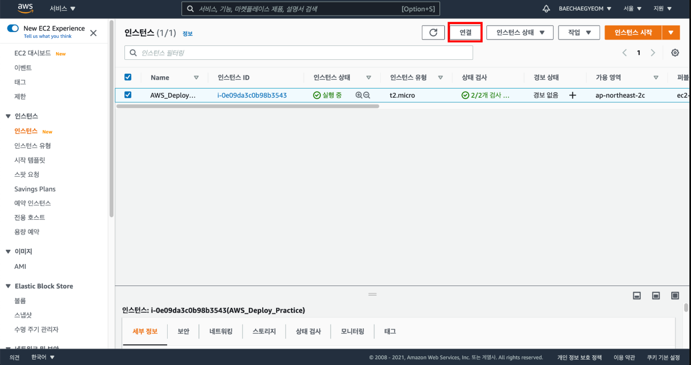
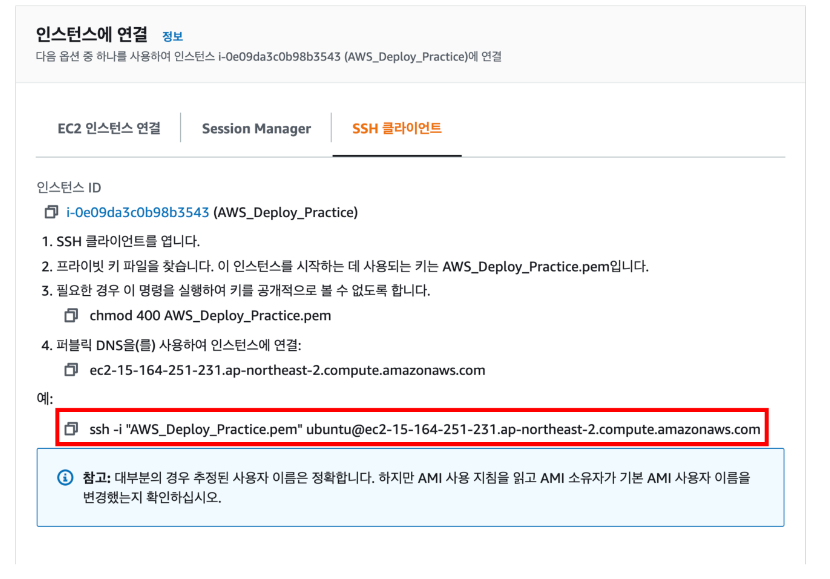
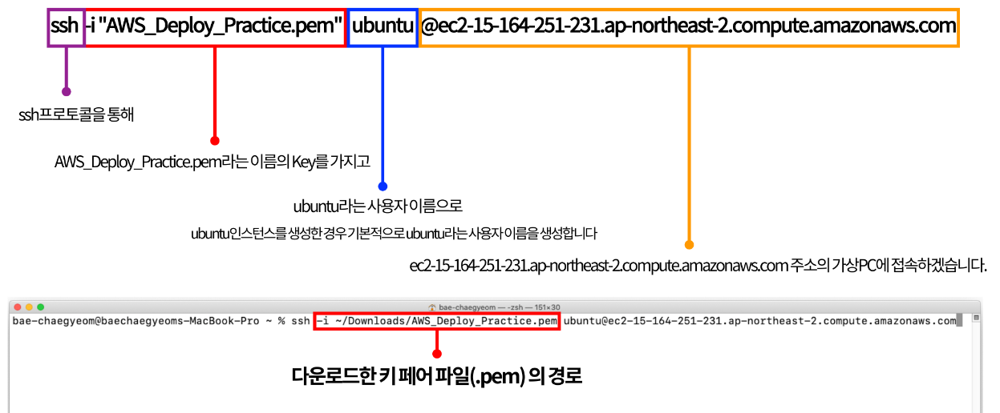
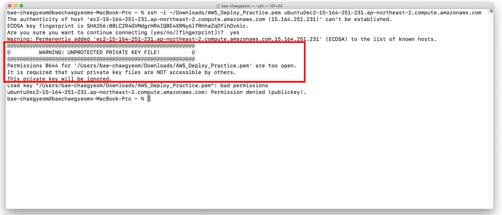
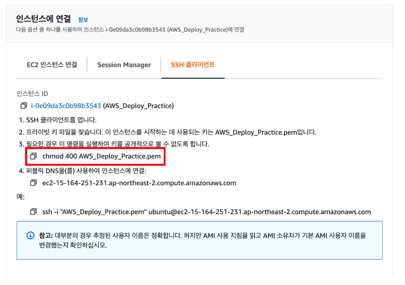
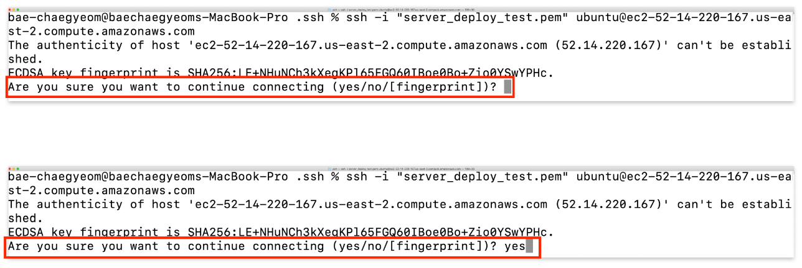
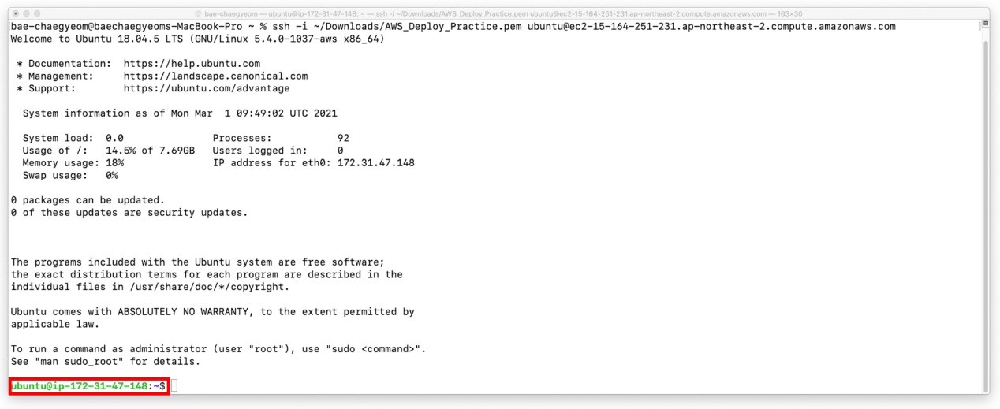
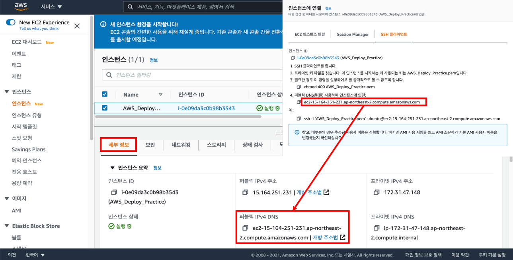

생성한 인스턴스에 원격접속하여 원격으로 인스턴스를 제어할 수 있다.
인스턴스에 원격접속을 하기 위해서 필요한 것이 인스턴스를 생성할 때 다운로드한 키 페어 파일(.pem)이다.

인스턴스 탭에서 연결하고자 하는 인스턴스를 선택한 후 연결 버튼을 클릭하면 인스턴스에 연결하는 방법을 확인할 수 있다.

로컬 터미널에서 SSH 프로토콜을 이용해서 인스턴스와 연결이 가능하다.

위 사진은 ssh 명령어를 통해 인스턴스에 접속하는 과정으로 각 명령어가 무엇을 뜻하는지에 대한 설명이다.

키 페어 파일(.pem)의 권한을 수정하지 않은 경우 권한이 너무 open되어있다는 경고 메시지와 함께 접속이 거절된다.

SSH 프로토콜을 이용해서 인스턴스와 연결이전에 다운로드했던 키 페어 파일(.pem)의 권한을 수정해 줘야 한다.
.pem 파일에 누구나 접근할 수 있는 권한이 부여되어 있다면 인스턴스는 연결을 거부하기 때문이다.

SSH 명령어를 올바르게 입력하면 위 화면과 같은 메시지가 터미널에 출력된다.
해당 메시지는 EC2 인스턴스에 처음 접속할 시 나오는 경고 메시지로 yes를 입력하여 다음 과정으로 넘어간다.

위 사진과 같은 화면이 나오면 SSH 프로토콜을 이용한 원격접속이 성공적으로 연결된 것이다.

ssh 접속을 위한 주소는 인스턴스를 클릭하면 보이는 세부 정보 탭에서도 확인할 수 있다.